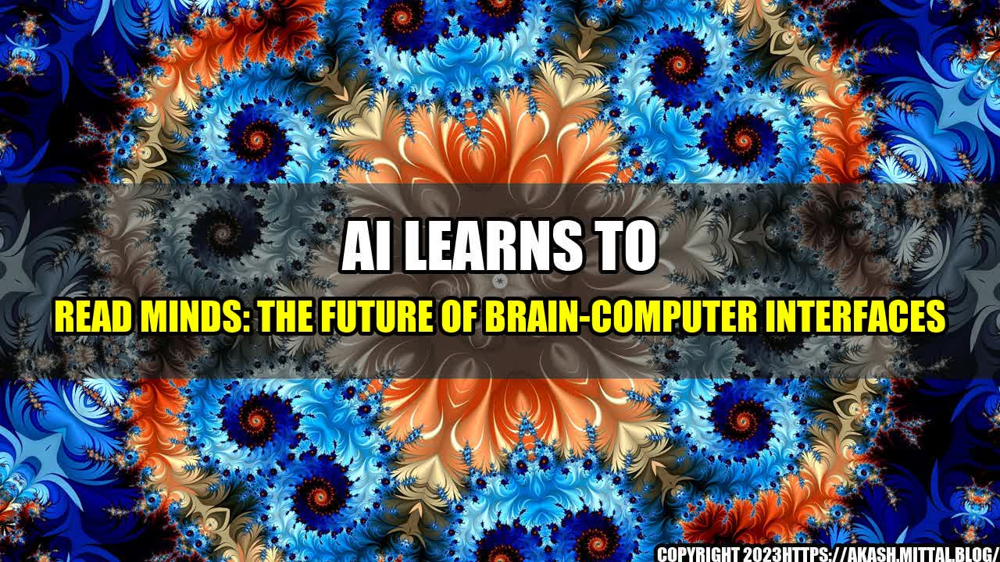

Introduction

Imagine a world where you can control your computer or smartphone without using your hands or voice, only your thoughts. This might seem like science fiction, but researchers around the world are making significant strides towards this future using artificial intelligence (AI) and brain-computer interfaces (BCIs).
In this article, we'll dive into the exciting world of mind-reading AI and explore the possibilities and limitations of this technology.
A Fascinating Story
In 2016, a team of researchers from the University of Washington created a breakthrough in BCI technology by developing an AI system that could read human thoughts.
The researchers implanted tiny electrodes into the brains of three epilepsy patients and asked them to read and imagine words while recording neural activity. They then trained an AI algorithm to recognize and decode the neural patterns associated with each word.
Remarkably, the AI was able to successfully read the patients' thoughts and reproduce the words they were thinking with an accuracy of up to 90 percent. This breakthrough not only proved the concept of mind-reading AI, but also had implications for people with speech impairments or locked-in syndrome.
Examples of Mind-Reading AI in Action
Since the University of Washington breakthrough, researchers have made significant strides in developing mind-reading AI for a variety of applications. Here are a few examples:
- Communication: Patients with ALS or other neurodegenerative conditions that limit their ability to speak could benefit from BCIs that allow them to communicate through thought. Mind-reading AI can decode neural activity into words or even sentences.
- Education: Researchers have developed systems that can tell whether a person understands a concept or not simply by analyzing their brain activity. This could revolutionize education by personalizing learning and adapting to individual students' needs.
- Entertainment: Imagine playing a video game with your mind instead of a controller. Researchers are developing systems that allow people to control video games, virtual reality experiences, and even drones with their thoughts.
Limitations of Mind-Reading AI
While the potential applications of mind-reading AI are exciting, there are also limitations to the technology that researchers must address. Here are a few:
- Accuracy: While the University of Washington study achieved an impressive 90 percent accuracy, subsequent studies have had less success. The brain is a complex and variable organ, and it can be difficult to predict or decode neural activity with sufficient accuracy for some applications.
- Privacy: BCIs that rely on implanted electrodes raise serious questions about privacy and security. Will users be comfortable with their thoughts being monitored and analyzed by outside parties, especially in the absence of strong regulations?
- Cost: BCIs are still an experimental technology and can be prohibitively expensive for many potential users. As the technology improves and becomes more widely available, cost will become less of a barrier.
Conclusion
Mind-reading AI is an exciting and rapidly developing technology with endless possibilities. Here are three takeaways:
- Researchers have demonstrated that AI can read human thoughts, with potential applications in communication, education, and entertainment.
- Mind-reading AI is not without limitations, including accuracy, privacy, and cost.
- As the technology improves and becomes more widely available, the possibilities for mind-reading AI will only grow.
References and Hashtags
For more information about mind-reading AI and brain-computer interfaces, check out these resources:
- #neuralink - Elon Musk's company developing BCIs for humans
- #BCI - The latest research and advancements in brain-computer interfaces
- #mindreadingAI - Article about the University of Washington mind-reading AI study
Category: Technology
Curated by Team Akash.Mittal.Blog
Share on Twitter Share on LinkedIn